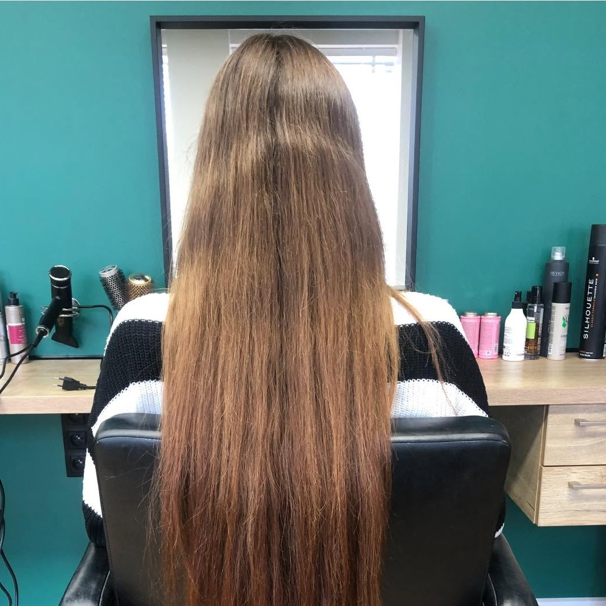
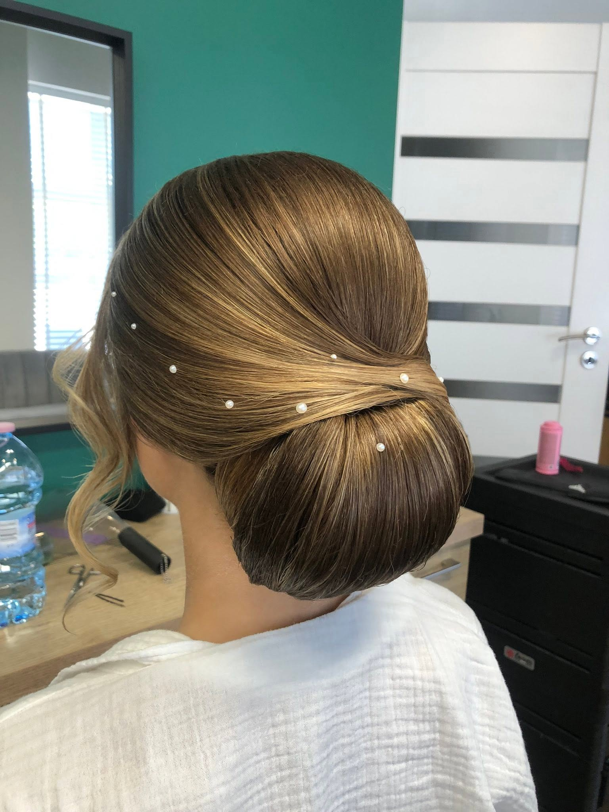

Galeria



Studio Fryzur Lidia, Łódzka 50 w Piotrkowie Trybunalskim. Strzyżenie, koloryzacja oraz fryzury ślubne i okolicznościowe.
Studio Fryzur Lidia prowadzi Lidia razem z zespołem: Justyna i Joanna. Najczęściej trafiasz do nas przed ślubem, studniówką albo inną ważną okazją, i wychodzisz z fryzurą, która trzyma się całą noc, nawet po tańcach.
Strzyżenie, formowanie i stylizacja na co dzień.
Farbowanie, balayage i zabiegi regenerujące.
Próby przed ślubem, studniówką czy sesją zdjęciową.
Na wesele, bal i każdą ważną okazję.
Cena zależy od długości i stanu włosów. Zadzwoń, a chętnie doradzimy i wycenimy.
Zapytaj o wycenę„Fryzura na studniówkę wyszła dokładnie tak, jak chciałam, i trzymała się całą noc, nawet po intensywnym tańcu. Miła atmosfera i pełen profesjonalizm.”
„Miałam wykonaną fryzurę ślubną, w której czułam się bardzo dobrze. Polecam serdecznie!”
„Bardzo profesjonalna obsługa pani Justyny, Joanny oraz szefowej Lidii. Bardzo dobrze dobrane kolory farb, super strzyżenie.”
„Byłam kilka razy na czesaniu na różne okazje, fryzura zawsze nienaganna, dokładna i trwała. Obie Panie są przemiłe.”
